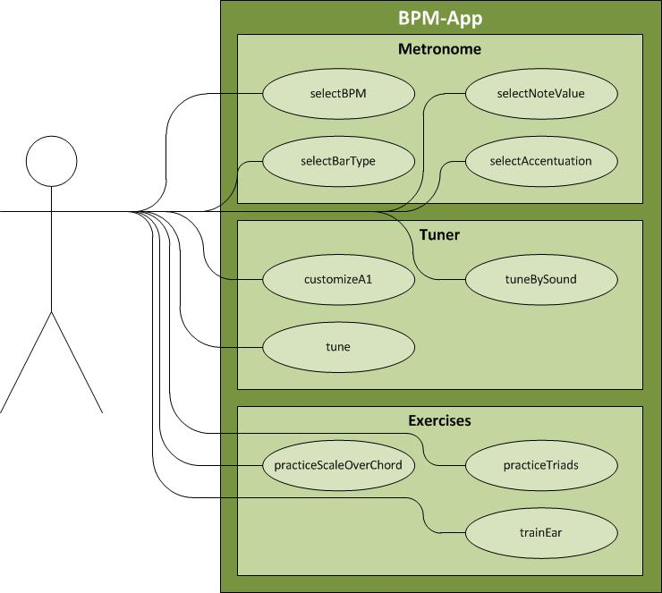
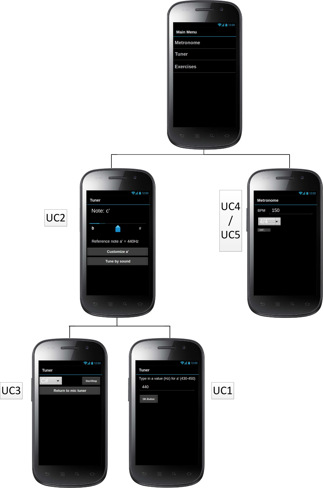

BPM
Software Requirements Specification
Version 1.1
Revision History
|
Date |
Version |
Description |
Author |
|
10/Okt/13 |
1.0 |
Erstauflage |
Mario W., Benedikt B. |
|
29/Okt/13 |
1.1 |
Wireframe, UCs verschoben |
Benedikt B. |
|
|
|
|
|
|
|
|
|
|
Table of Contents
1.3 Definitions, Acronyms and Abbreviations
Software
Requirements Specification
In diesem Kapitel wird ein kurzer Überblick über das Dokument gegeben und eine Hilfestellung zu dessen besserem Verständnis.
Inhalt dieses Dokumentes ist die Spezifikation der Anforderungen an
die Applikation BPM.
Die Spezifikation wird verwendet um die
Anforderungen zu definieren, rück zu verfolgen und zu validieren.
Dieses Dokument ist insbesondere für Entwickler und Tester gedacht
welche die genannten Abläufe durchführen.
Die App wird eingesezt um fortgeschrittene Musikern beim täglichen komplexen Üben zu unterstützen.
Alle Definitionen und Abkürzungen, die in diesem Dokument erscheinen, sin dim Glossar erfasst und erläutert.
Die weitere Gliederung dieses Dokuments ist wie folgt:
In diesem Kapitel werden Informationen zu dem Produkt und dessen Umfeld gegeben, so dass die Anforderungen besser verstanden und eingeordnet werden können. Es werden noch keine spezifischen Anforderungen gemacht.
Die Applikation ist für den Einsatz auf Mobilgeräten vorgesehen, insbesondere Geäte mit dem Betriebssystem „Android“.
Die App soll Musiker beim Üben unterstützen.
Beim Softwaredesign ist zu beachten:
Bei der Erstellung der Software und Dokumentation müssen die Anforderungen der Vorlesung
Software Engineering II berücksichtigt werden.


Dieser Abschnitt beschreibt die spezifischen Anforderungen an die Software.
Die zu implementierenden Use-Cases werden im folgenden beschrieben.
|
Use-Case |
Status |
Beschreibung |
|
UC1-customizeA1 |
Offen |
|
|
UC2-tune |
Offen |
|
|
UC3-tuneBySound |
Offen |
|
|
UC4-selectBPM |
Offen |
|
|
UC5-selectBarType |
Offen |
|
|
UC6-selectANoteValue |
Offen |
folgt |
|
UC7-selectAccentuation |
Offen |
folgt |
|
UC8-practiceTriads |
Offen |
folgt |
|
UC9-practiceScaleOverChord |
Offen |
folgt |
|
UC10-trainEar |
Offen |
folgt |
ggf. werden die Use-Cases angepasst.
Die Grundfunktionen der Applikation sollen für Privatanwender ohne nennenswerten technischen Kenntnissen nach kurzer Einarbeitungszeit nutzbar sein. Zur Nutzung weiterer Features sind musikalische Grundkenntnisse nötig.
Da es sich bei einem Metronom um eine zeitkritische Anwendung handelt, dürfen die Verzögerungszeiten nicht größer als 12ms sein. Verzögerungen darunter werden nicht wahrgenommen.
Die Oberfläche der Applikation soll möglichst klar Strukturiert sein um eine einfache Bedienung zu gewährleisten. Ebenfalls aus diesem Grund soll es auch eine Oberfläche geben, die nur die Grundfunktionen beinhaltet. So werden unerfahrene Nutzer nicht von der Nutzung abgeschreckt. Welche Funktionen zu den Grundfunktionen gehören wird zu einem späteren Zeitpunkt festgelegt.
Im folgenden werden die verwendeten Schnittstellen beschrieben.
Die Applikation soll bis auf weiteres kostenlos zur Verfügung gestellt werden.
Da die Applikation aus mehreren Software-Komponenten bestehen wird muss darauf geachtet werden, dass die Software möglichst Modular geschrieben wird. Dies vereinfacht die spätere Wartung. Die Quellcode-Dateien sollen nur die Strukturen enthalten, die für die Funktionalität notwendig sind. Um einen Überblick zu wahren sollen die Softwarekomponenten mittels einer Versionsverwaltung entwickelt werden. Änderungen am Quellcode sind stets zu dokumentieren.
Für das Produkt ist kein Support vorgesehen.
Glosar: leer
Abkürzungen: leer